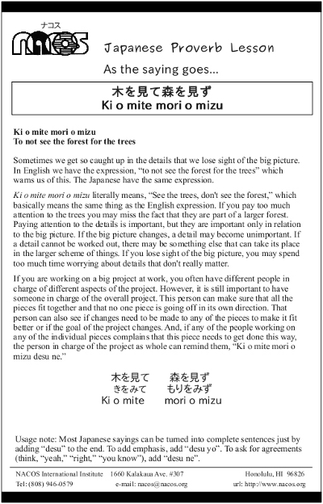

Ki o mite mori o mizu
To not see the forest for the trees
Sometimes we get so caught up in the details that we lose sight of the big picture. In English we have the expression, “to not see the forest for the trees” which warns us of this. The Japanese have the same expression.
Ki o mite mori o mizu literally means, “See the trees, don't see the forest,” which basically means the same thing as the English expression. If you pay too much attention to the trees you may miss the fact that they are part of a larger forest. Paying attention to the details is important, but they are important only in relation to the big picture. If the big picture changes, a detail may become unimportant. If a detail cannot be worked out, there may be something else that can take its place in the larger scheme of things. If you lose sight of the big picture, you may spend too much time worrying about details that don't really matter.
If you are working on a big project at work, you often have different people in charge of different aspects of the project. However, it is still important to have someone in charge of the overall project. This person can make sure that all the pieces fit together and that no one piece is going off in its own direction. That person can also see if changes need to be made to any of the pieces to make it fit better or if the goal of the project changes. And, if any of the people working on any of the individual pieces complains that this piece needs to get done this way, the person in charge of the project as whole can remind them, “Ki o mite mori o mizu desu ne.”
Usage note: Most Japanese sayings can be turned into complete sentences just by adding “desu” to the end. To add emphasis, add “desu yo”. To ask for agreements (think, “yeah,” “right,” “you know”), add “desu ne”.

| © 1995-2013 NACOS International Institute. All Rights Reserved. |